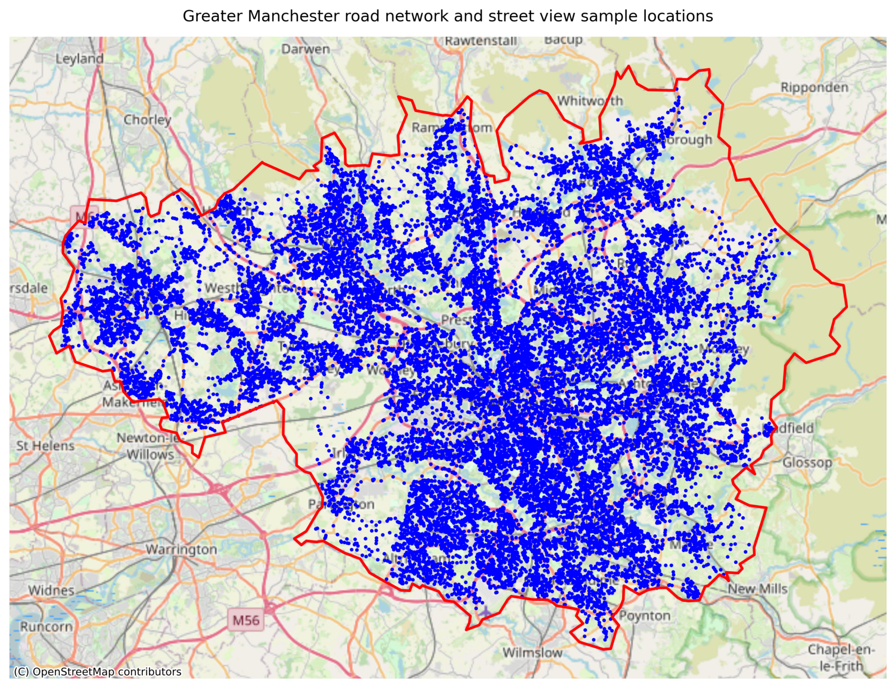
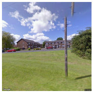
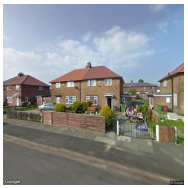
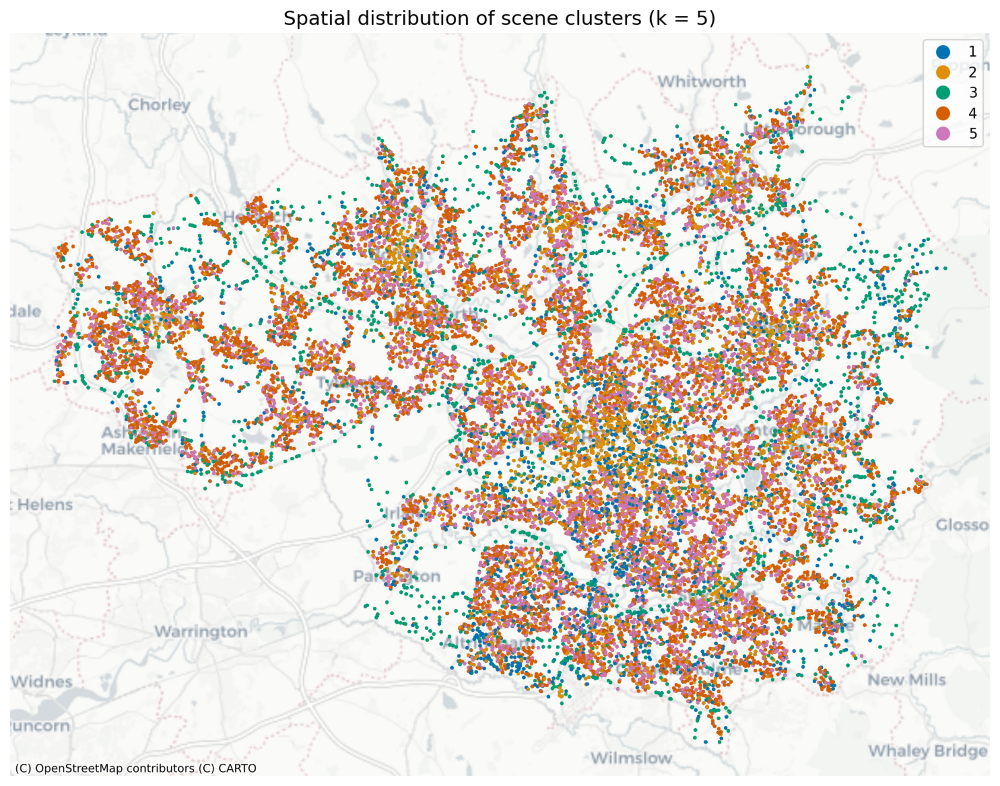
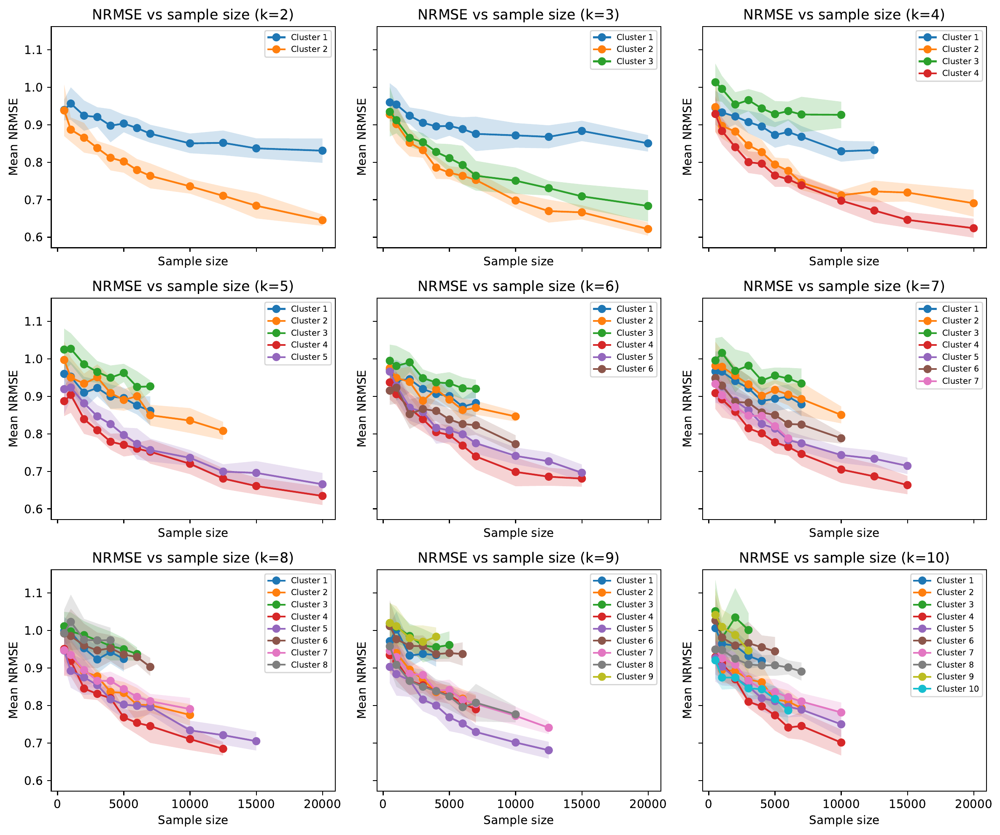
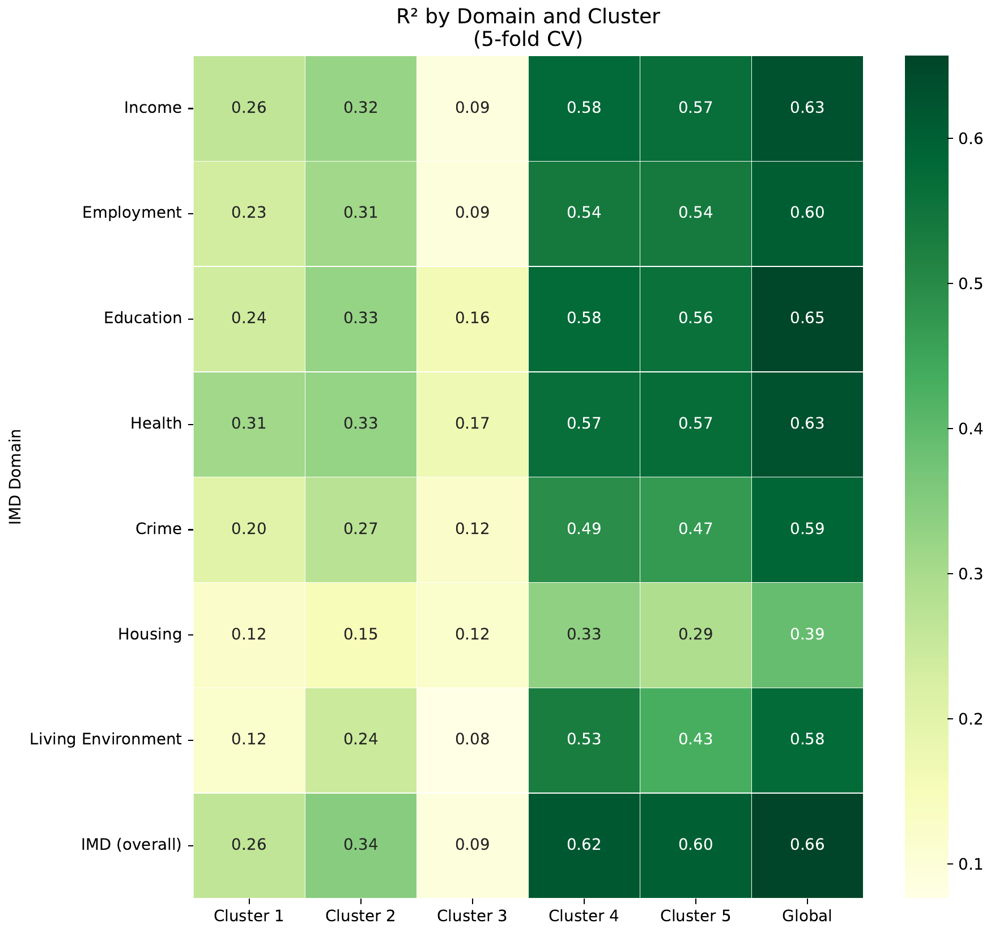
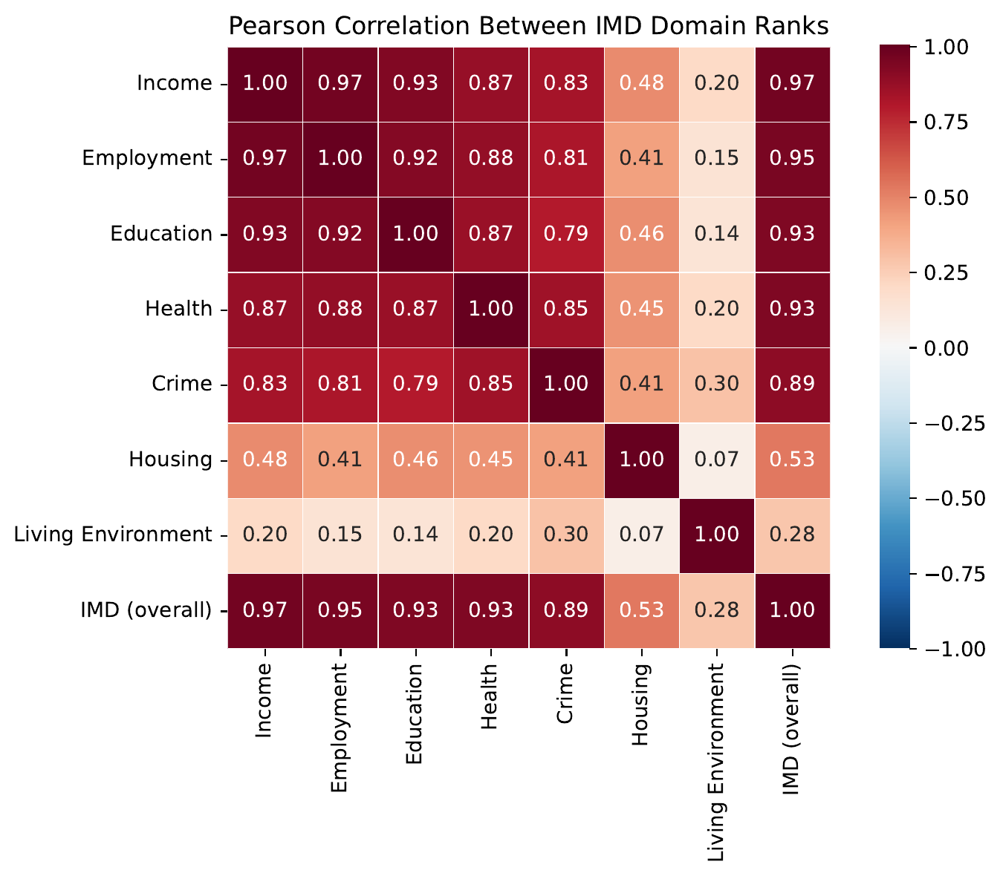

GeoAI, 3-6 June 2026, Ghent
Estimating Visible Deprivation through the Analysis of Street View Image Embeddings
Nick Malleson, Molly Asher, et al., University of Leeds, UK
n.s.malleson@leeds.ac.uk
Slides available at:
https:/nickmalleson.github.io/presentations.html

Overview
Aim: estimate how much neighbourhood material deprivation is recoverable from street-level imagery alone
Method: Street view image embeddings (CLIP) and Alpha Earth embeddings used to predict deprivation
Results: Surprisingly good predicions! Pictures of houses seem to have the strongest signal
Paper (in review)
Asher, Comber, Golzari Osguie, Bui Quang, Kieu & Malleson (2026), Estimating Visible Deprivation through the Analysis of Street View Image Embeddings
Deprivation is partly visible
Deprivation = disadvantage relative to wider societal norms (Townsend, 1987)
Material deprivation is measured from administrative data – e.g. the English Indices of Multiple Deprivation (IMD)
Many signs are physically visible in the streetscape:
litter, graffiti, disrepair, housing condition … these co-vary with the conditions that produce deprivation (Sampson & Raudenbush, 1999)
But how much deprivation is visible?
Could we recover the IMD signal from images of the neighbourhood, rather than from socio-economic data?
GeoAI & image embeddings
Vision transformers turn an image into an embedding: a vector where visually/semantically similar images sit close together
Pre-trained once, reused across tasks – no hand-crafted features or task-specific training needed
We use CLIP (Radford et al., 2021), a vision–language model that aligns images with text
In further work we start to examine the text associated with deprivation
Prior work links street imagery to crime, income, perceived safety, poverty and disorder – but mostly in US/China, on proxy indicators, rarely isolating the contribution of images alone
Research questions
Using Greater Manchester, UK as a case study:
RQ1. To what extent can area-level deprivation be predicted from visual imagery?
RQ2. Does the strength of the predictive signal vary across different kinds of images?
RQ3. Does the predictive signal vary by deprivation domain?
Two complementary sources tested for RQ1: street-level photography vs satellite imagery
Study area & data

Greater Manchester, UK – 3M+ people, ten conurbations
Deprivation: 2025 IMD at LSOA level (1,702 neighbourhoods), as national rank
Street View: points sampled on the OSM road network; 4 images (N/E/S/W) per point
18,897 points → ~75,600 images
Satellite: AlphaEarth Foundations embeddings (Brown et al., 2025) – 10 m, multi-sensor
Methods
CLIP embeddings calculated for each Street View image (512-dim)
AlphaEarth provides satellite embeddings (64-dim)
Embeddings are median-pooled to the LSOA
XGBoost models predict IMD rank from the embeddings
Street View embeddings are also clusters to compare the predictive stength of different types of scenes
XXXX IMAGE OF STREET VIEW AND ALPHA EARTH ME EMBEDDINGS

RQ1: Street view v.s. satellite
How much IMD-rank variance does each source explain?
~68%
Street View (CLIP)
512-dim · test R² = 0.68
~33%
Satellite (AlphaEarth)
64-dim · test R² = 0.32
Ground-level cues are not readily visible from above
Remaining analysis uses street view only


RQ2: Do some scenes carry more signal?
Partition the image embeddings into k = 5 clusters of visually similar scenes (k-means)

Then fit a separate model per cluster. Clusters look like:
Cluster 1: greenery / rural
Cluster 2: commercial / industrial
Cluster 3: rural roads
Clusters 4 & 5: houses / residential
RQ2: 'Residential' scenes appear to carry the strongest signal
Residential scenes are far more informative (left).
Holds when controlling for sample size (right).

| Cluster (scene) | R² |
|---|---|
| 4 — houses | 0.60 |
| 5 — houses | 0.57 |
| 2 — commercial/industrial | 0.37 |
| 1 — greenery | 0.32 |
| 3 — rural roads | 0.07 |
| Global (all images) | 0.68 |

RQ3: Which deprivation domains are visible?
Separate models per IMD domain.
Most domains predicted similarly well (R² ~0.56–0.65)
Strong correlation between most domains, even if not 'visible'
Exception: Barriers to Housing & Services (R² = 0.39).
Possibly because houses more affordable in deprived areas?

Why so consistent across domains?
The IMD domains are highly correlated
Deprivation is spatially concentrated & mutually reinforcing
Visual character acts as a proxy for many domains
The model needn't ‘see’ educational attainment – it co-occurs with visually distinctive built environments
Housing & Services is the outlier: affordability may run inversely to the usual visual cues of deprivation
Conclusions
Off-the-shelf CLIP embeddings of Street View explain ~68% of IMD-rank variance, satellites only ~33%
Signal is uneven: scenes that appear residential carry far more than roads, greenery or industry
Broadly consistent across domains (bar Housing & Services)
Future work
Finer spatial/temporal resolution than administrative indices allow
Multimodal foundation model (street + satellite + POIs + …)
Linking embedding dimensions to visual features via CLIP text prompts
GeoAI, 3-6 June 2026, Ghent
Estimating Visible Deprivation through the Analysis of Street View Image Embeddings
Nick Malleson, Molly Asher, et al., University of Leeds, UK
n.s.malleson@leeds.ac.uk
Slides available at:
https:/nickmalleson.github.io/presentations.html
Cluster 1 – greenery (R²=0.32)

Cluster 2 – commercial/industrial (R²=0.37)

Cluster 3 – rural roads (R²=0.07)
Cluster 4 – houses (R²=0.60)
Cluster 5 – houses (R²=0.57)